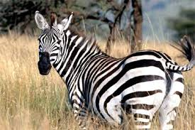

Giống như dấu vân tay độc nhất vô nhị của con người, mỗi cá thể ngựa vằn đều có những sọc đen riêng biệt của mình. Không giống như hai “người anh em“: ngựa và lừa, ngựa vằn chưa bao giờ được thuần hóa.Bờ vai của ngựa vằn đồng bằng phổ biến có kích thước khoảng từ 1,2 đến 1,3 mét còn phần thân dài từ 2 đến 2,6 mét. Cân nặng của con đực thường lớn hơn một chút so với con cái. Trong tất cả các loài, ngựa vằn Grevy là giống ngựa có kích thước lớn nhất.
Ngựa vằn thường di chuyển chậm hơn loài ngựa thông thường, nhưng về khả năng chạy bền tuyệt vời của chúng thì những kẻ săn mồi dữ tợn còn kém xa. Khi bị truy đuổi, một con ngựa vằn sẽ chạy theo đường zig-zag từ bên ngày sang bên kia khiến cho những con thú ăn thịt khó tấn công hơn. Đến lúc bị dồn vào chân tường, loài này sẽ đừng thẳng lên bằng hai chân và đá hoặc cắn vào kẻ thù của mình
Vì đặc điểm địa hình nơi mình sống nên ngựa vằn thường xuyên phải di chuyển để tìm thức ăn và nguồn nước. Đôi khi, loài này tụ tập lại thành một đàn lớn hàng ngàn cá thể để di cư đi đến một nơi ở tốt hơn. Trong đàn ngựa vằn còn xen lẫn thêm một số động vật ăn cỏ khác như linh dương đầu bò
Trong khi hầu hết các loài ngựa vằn đều có nguy cơ tuyệt chủng thấp thì ngựa vằn Grevy được coi là loài đang trong tình trạng vô cùng nguy cấp